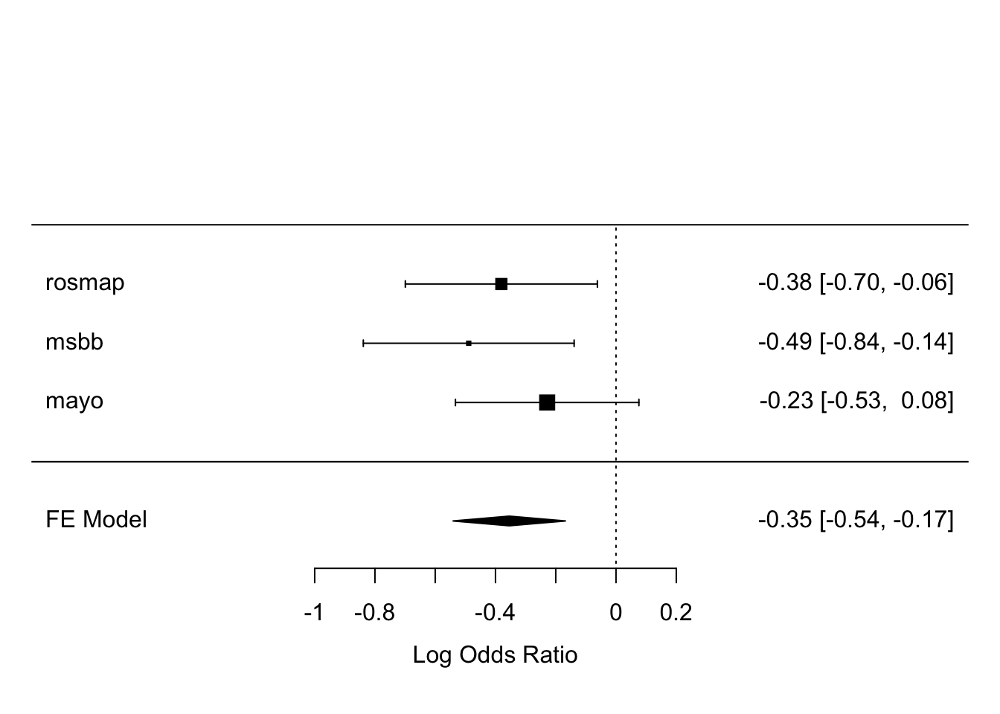
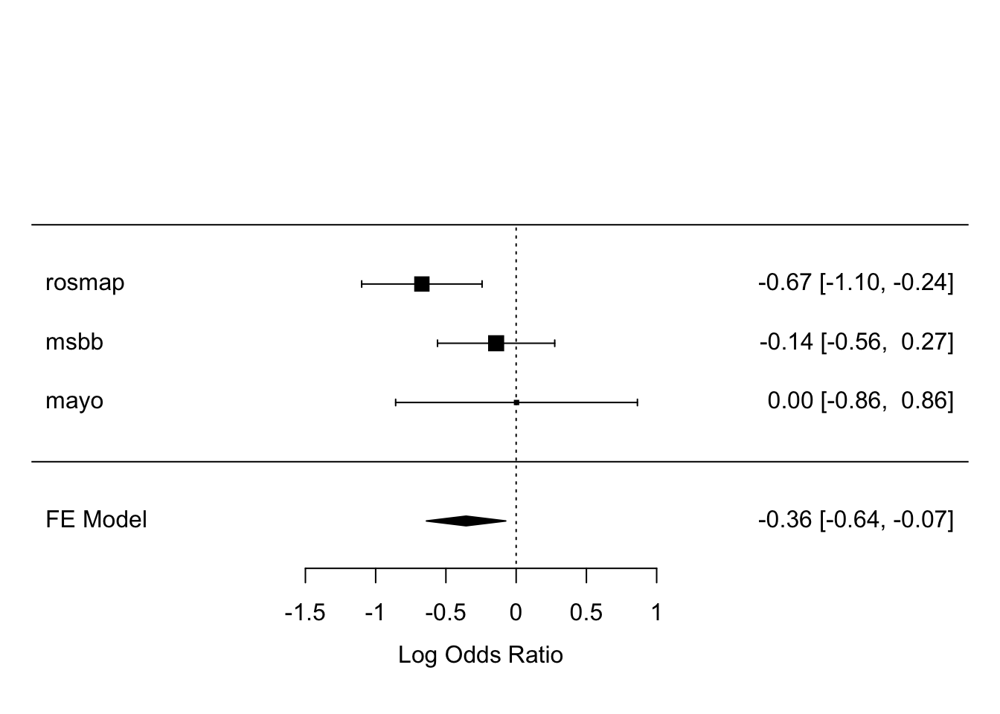
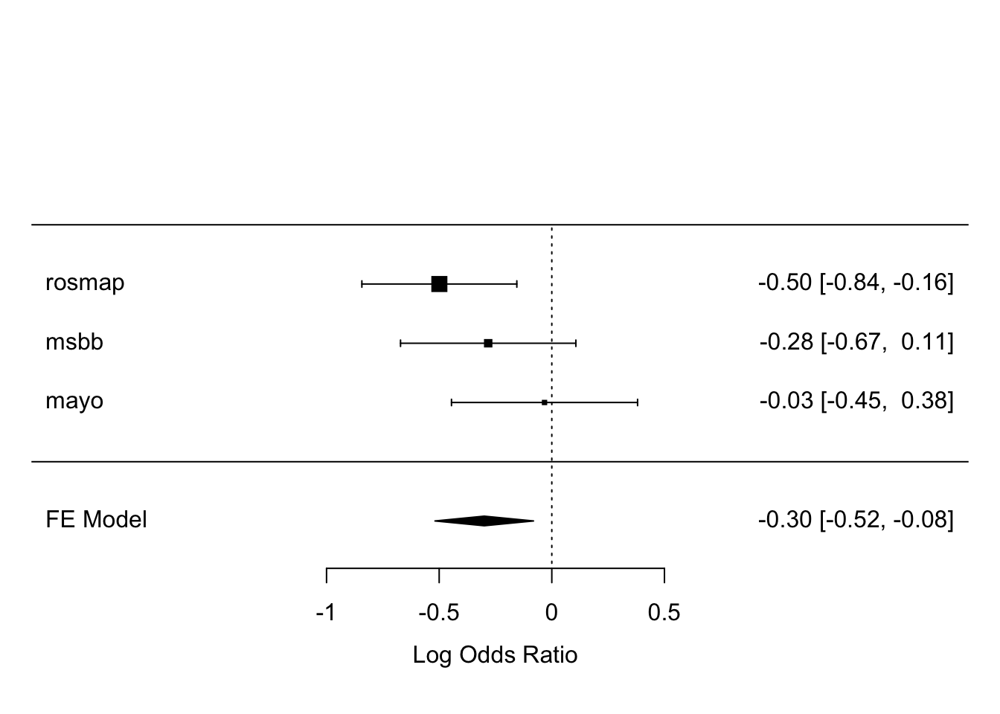

6.4 Aim 2 (mtDNAcn)
6.4.1 Aim 2a
- AMP-AD
- Standardize mtDNAcn
- ROSMAP
- Exclude samples with DNA isolated from blood
- Adjust for Source Tissue
- Clinical diagnosis converted to binary variable
- Mayo
- Exclude Cerebellar Cortex
- Lump IWX
- Lump HV
- AOD cat
- MSBB
- Lump IWX
| Association of mtDNAcn with Neuropathologicly confirmed AD | |||||||||
|---|---|---|---|---|---|---|---|---|---|
| Characteristic | ROSMAP | MSBB | Mayo | ||||||
| OR1 | 95% CI1 | p-value | OR1 | 95% CI1 | p-value | OR1 | 95% CI1 | p-value | |
| zmtDNAcn | 0.68 | 0.50, 0.94 | 0.019 | 0.61 | 0.43, 0.86 | 0.006 | 0.80 | 0.58, 1.08 | 0.14 |
| macro_lmp | |||||||||
| H | — | — | — | — | |||||
| I | 0.89 | 0.37, 2.24 | 0.8 | ||||||
| J | 1.93 | 1.02, 3.84 | 0.050 | 0.92 | 0.32, 2.71 | 0.9 | 1.74 | 0.67, 4.53 | 0.3 |
| K | 1.05 | 0.56, 2.03 | 0.9 | 1.17 | 0.52, 2.67 | 0.7 | 2.73 | 0.89, 8.41 | 0.076 |
| T | 1.11 | 0.64, 1.97 | 0.7 | 2.89 | 0.79, 12.6 | 0.13 | 0.69 | 0.26, 1.73 | 0.4 |
| U | 0.94 | 0.59, 1.51 | 0.8 | 1.40 | 0.43, 5.13 | 0.6 | 0.51 | 0.19, 1.29 | 0.2 |
| V | 1.33 | 0.62, 3.07 | 0.5 | 1.12 | 0.31, 4.76 | 0.9 | |||
| W | 0.85 | 0.25, 3.09 | 0.8 | ||||||
| X | 1.36 | 0.36, 6.51 | 0.7 | ||||||
| IWX | 1.84 | 0.39, 13.4 | 0.5 | 1.17 | 0.32, 3.81 | 0.8 | |||
| HV | — | — | |||||||
| aod | 1.07 | 1.04, 1.10 | <0.001 | 1.00 | 0.96, 1.04 | >0.9 | |||
| sex | |||||||||
| F | — | — | — | — | — | — | |||
| M | 0.74 | 0.53, 1.05 | 0.093 | 1.58 | 0.74, 3.50 | 0.2 | 0.59 | 0.32, 1.05 | 0.076 |
| apoe4 | |||||||||
| e4- | — | — | — | — | — | — | |||
| e4+ | 3.61 | 2.36, 5.66 | <0.001 | 2.64 | 1.31, 5.54 | 0.008 | 4.17 | 2.28, 7.76 | <0.001 |
| pmi | 1.01 | 0.98, 1.04 | 0.6 | 0.90 | 0.84, 0.96 | 0.001 | |||
| SourceTissue | |||||||||
| Brain-DLPFC | — | — | |||||||
| Brain-Posterior Cingulate Cortex | 1.00 | 0.55, 1.89 | >0.9 | ||||||
| Brain-Cerebellum | 0.36 | 0.18, 0.71 | 0.004 | ||||||
| aod_cat.L | 0.72 | 0.33, 1.59 | 0.4 | ||||||
| aod_cat.Q | 1.32 | 0.66, 2.66 | 0.4 | ||||||
| aod_cat.C | 0.80 | 0.43, 1.47 | 0.5 | ||||||
|
1
OR = Odds Ratio, CI = Confidence Interval
|
|||||||||
Fixed effects inverse weighted Meta-analysis of mtDNAcn with ADNC

6.4.2 Aim 2b
- ROSMAP
- Should I drop PCC and Cerebelum samples, then do joint analysis with MSBB?
- MSBB
Investigate the assocation of mtDNAcn with NIA-Regan Score, CERAD Score and Braak Stage in ROSMAP
rosmap_niaregan_res2b <- vglm(niareagansc ~ zmtDNAcn + macro_lmp + aod + sex + apoe4 + pmi + SourceTissue,
family=propodds(), data = rosmap_mtdna)
rosmap_cerad_res2b <- vglm(ceradsc ~ zmtDNAcn + macro_lmp + aod + sex + apoe4 + pmi + SourceTissue,
family=propodds(), data = rosmap_mtdna)
rosmap_braak_res2b <- vglm(braaksc ~ zmtDNAcn + macro_lmp + aod + sex + apoe4 + pmi + SourceTissue,
family=propodds(), data = rosmap_mtdna)| term | niareagansc | ceradsc | braaksc |
|---|---|---|---|
| (Intercept):1 | 0.03 [0, 0.21]; p = <0.001 | 0.12 [0.02, 0.87]; p = 0.035 | 0.03 [0, 0.2]; p = <0.001 |
| (Intercept):2 | 0 [0, 0.02]; p = <0.001 | 0.07 [0.01, 0.53]; p = 0.009 | 0 [0, 0.01]; p = <0.001 |
| zmtDNAcn | 0.62 [0.47, 0.82]; p = <0.001 | 0.7 [0.53, 0.91]; p = 0.008 | 0.63 [0.47, 0.84]; p = 0.002 |
| macro_lmpI | 1.03 [0.47, 2.24]; p = 0.937 | 0.76 [0.36, 1.6]; p = 0.466 | 1.07 [0.48, 2.38]; p = 0.876 |
| macro_lmpJ | 1.55 [0.92, 2.61]; p = 0.101 | 1.46 [0.87, 2.43]; p = 0.152 | 1.38 [0.81, 2.38]; p = 0.239 |
| macro_lmpK | 1.39 [0.8, 2.4]; p = 0.240 | 1.1 [0.65, 1.88]; p = 0.719 | 1.95 [1.1, 3.47]; p = 0.023 |
| macro_lmpT | 1.4 [0.87, 2.26]; p = 0.171 | 1.35 [0.85, 2.17]; p = 0.206 | 1.15 [0.7, 1.9]; p = 0.579 |
| macro_lmpU | 1 [0.66, 1.51]; p = 0.990 | 0.97 [0.65, 1.44]; p = 0.876 | 0.98 [0.64, 1.49]; p = 0.914 |
| macro_lmpV | 1.37 [0.72, 2.63]; p = 0.339 | 1.5 [0.78, 2.87]; p = 0.220 | 1.34 [0.68, 2.64]; p = 0.394 |
| macro_lmpW | 1.07 [0.36, 3.24]; p = 0.901 | 0.73 [0.25, 2.12]; p = 0.562 | 1.38 [0.44, 4.36]; p = 0.581 |
| macro_lmpX | 1.21 [0.39, 3.82]; p = 0.741 | 1.34 [0.43, 4.2]; p = 0.613 | 0.96 [0.29, 3.19]; p = 0.943 |
| aod | 1.05 [1.03, 1.07]; p = <0.001 | 1.04 [1.02, 1.06]; p = <0.001 | 1.07 [1.04, 1.09]; p = <0.001 |
| sexM | 0.61 [0.45, 0.82]; p = 0.001 | 0.67 [0.5, 0.89]; p = 0.007 | 0.48 [0.35, 0.65]; p = <0.001 |
| apoe4e4+ | 3.79 [2.7, 5.31]; p = <0.001 | 4.01 [2.86, 5.62]; p = <0.001 | 3.24 [2.28, 4.6]; p = <0.001 |
| pmi | 1 [0.98, 1.03]; p = 0.863 | 1.01 [0.98, 1.03]; p = 0.548 | 1 [0.97, 1.02]; p = 0.873 |
| SourceTissueBrain-Posterior Cingulate Cortex | 0.95 [0.56, 1.59]; p = 0.836 | 0.91 [0.55, 1.51]; p = 0.719 | 0.65 [0.38, 1.12]; p = 0.120 |
| SourceTissueBrain-Cerebellum | 0.3 [0.16, 0.55]; p = <0.001 | 0.36 [0.2, 0.64]; p = <0.001 | 0.33 [0.18, 0.61]; p = <0.001 |
Investigate the assocation of mtDNAcn with NIA-Regan Score, CERAD Score and Braak Stage in MSBB
msbb_niaregan_res2b <- vglm(niareagansc ~ zmtDNAcn + macro_lmp + aod + sex + apoe4 + pmi,
family=propodds(), data = msbb_mtdna)
msbb_cerad_res2b <- vglm(ceradsc ~ zmtDNAcn + macro_lmp + aod + sex + apoe4 + pmi,
family=propodds(), data = msbb_mtdna)
msbb_braak_res2b <- vglm(braaksc ~ zmtDNAcn + macro_lmp + aod + sex + apoe4 + pmi,
family=propodds(), data = msbb_mtdna)| term | niareagansc | ceradsc | braaksc |
|---|---|---|---|
| (Intercept):1 | 21.45 [1.03, 448.42]; p = 0.048 | 34.79 [1.57, 771.56]; p = 0.025 | 1.57 [0.07, 34.07]; p = 0.775 |
| (Intercept):2 | 3.72 [0.18, 75.93]; p = 0.393 | 7.51 [0.35, 162.15]; p = 0.199 | 0.43 [0.02, 9.32]; p = 0.590 |
| zmtDNAcn | 0.65 [0.49, 0.87]; p = 0.004 | 0.73 [0.55, 0.96]; p = 0.026 | 0.66 [0.5, 0.88]; p = 0.005 |
| macro_lmpIWX | 1.74 [0.47, 6.37]; p = 0.405 | 1.91 [0.49, 7.42]; p = 0.348 | 1.01 [0.27, 3.71]; p = 0.993 |
| macro_lmpJ | 1.09 [0.43, 2.72]; p = 0.858 | 1.07 [0.43, 2.67]; p = 0.890 | 0.86 [0.34, 2.14]; p = 0.743 |
| macro_lmpK | 1.24 [0.64, 2.4]; p = 0.530 | 1.22 [0.63, 2.39]; p = 0.556 | 1.12 [0.57, 2.21]; p = 0.736 |
| macro_lmpT | 2.68 [0.94, 7.68]; p = 0.066 | 2.01 [0.69, 5.86]; p = 0.199 | 3.66 [1.15, 11.58]; p = 0.028 |
| macro_lmpU | 1.41 [0.56, 3.54]; p = 0.471 | 1.14 [0.44, 2.95]; p = 0.784 | 2.52 [0.9, 7.09]; p = 0.080 |
| macro_lmpV | 1.41 [0.46, 4.27]; p = 0.546 | 0.94 [0.31, 2.86]; p = 0.913 | 1.65 [0.51, 5.3]; p = 0.401 |
| aod | 0.97 [0.94, 1.01]; p = 0.110 | 0.98 [0.94, 1.01]; p = 0.133 | 1.01 [0.98, 1.04]; p = 0.625 |
| sexM | 1.75 [0.95, 3.23]; p = 0.073 | 2.08 [1.11, 3.92]; p = 0.023 | 1.23 [0.65, 2.31]; p = 0.527 |
| apoe4e4+ | 2.08 [1.2, 3.6]; p = 0.009 | 1.85 [1.06, 3.25]; p = 0.031 | 2.34 [1.31, 4.18]; p = 0.004 |
| pmi | 0.91 [0.86, 0.97]; p = 0.002 | 0.89 [0.84, 0.94]; p = <0.001 | 0.93 [0.88, 0.98]; p = 0.010 |
6.4.3 Sensetivity Analysis
6.4.3.1 Adjust for xCell gene set enrichments for Neurons and Astrocytes
- Adjust for RNAseq batch and RIN where avaliable
- ROSMAP
- DLPFC only
- lmp IWX
- MSBB
- lmp IWX
- lmp RNAseq batch
- Mayo
- lmp IWX
- ROSMAP
| Descriptive statistics for xCell analysis | ||||||
|---|---|---|---|---|---|---|
| Characteristic | ROSMAP | MSBB | Mayo | |||
| 0, N = 691 | 1, N = 1331 | 0, N = 551 | 1, N = 1041 | 0, N = 841 | 1, N = 491 | |
| zmtDNAcn | 0.34 (1.00) | -0.17 (0.96) | 0.28 (0.90) | -0.15 (1.02) | 0.00 (1.10) | 0.00 (0.81) |
| macro_lmp | ||||||
| H | 28 (41%) | 60 (45%) | 24 (44%) | 35 (34%) | ||
| IWX | 6 (8.7%) | 11 (8.3%) | 2 (3.6%) | 6 (5.8%) | 3 (3.6%) | 2 (4.1%) |
| J | 8 (12%) | 14 (11%) | 8 (15%) | 8 (7.7%) | 7 (8.3%) | 8 (16%) |
| K | 6 (8.7%) | 10 (7.5%) | 12 (22%) | 32 (31%) | 5 (6.0%) | 5 (10%) |
| T | 3 (4.3%) | 15 (11%) | 3 (5.5%) | 7 (6.7%) | 13 (15%) | 6 (12%) |
| U | 15 (22%) | 17 (13%) | 3 (5.5%) | 10 (9.6%) | 11 (13%) | 6 (12%) |
| V | 3 (4.3%) | 6 (4.5%) | 3 (5.5%) | 6 (5.8%) | ||
| HV | 45 (54%) | 22 (45%) | ||||
| aod_cat | ||||||
| 50-69 | 0 (0%) | 0 (0%) | 4 (7.3%) | 3 (2.9%) | 6 (7.1%) | 3 (6.1%) |
| 70-79 | 16 (23%) | 8 (6.0%) | 10 (18%) | 14 (13%) | 13 (15%) | 9 (18%) |
| 80-89 | 27 (39%) | 58 (44%) | 18 (33%) | 45 (43%) | 50 (60%) | 26 (53%) |
| 90+ | 26 (38%) | 67 (50%) | 23 (42%) | 42 (40%) | 15 (18%) | 11 (22%) |
| sex | ||||||
| F | 40 (58%) | 87 (65%) | 38 (69%) | 72 (69%) | 42 (50%) | 31 (63%) |
| M | 29 (42%) | 46 (35%) | 17 (31%) | 32 (31%) | 42 (50%) | 18 (37%) |
| apoe4 | ||||||
| e4- | 62 (90%) | 94 (71%) | 42 (76%) | 58 (56%) | 69 (82%) | 25 (51%) |
| e4+ | 7 (10%) | 39 (29%) | 13 (24%) | 46 (44%) | 15 (18%) | 24 (49%) |
| pmi | 7.6 (4.9) | 8.0 (5.9) | 9.3 (6.5) | 5.9 (3.9) | 5.5 (6.2) | 6.8 (5.5) |
| Neurons | 0.10 (0.88) | -0.05 (1.06) | 0.13 (0.86) | -0.07 (1.07) | 0.15 (1.06) | -0.25 (0.85) |
| Astrocytes | -0.07 (0.77) | 0.04 (1.10) | -0.09 (1.10) | 0.05 (0.94) | -0.33 (0.75) | 0.56 (1.12) |
|
1
Statistics presented: mean (SD); n (%)
|
||||||
| Association of mtDNAcn with Neuropathologicly confirmed AD, adjusting for xCell | |||||||||
|---|---|---|---|---|---|---|---|---|---|
| Characteristic | ROSMAP | MSBB | Mayo | ||||||
| OR1 | 95% CI1 | p-value | OR1 | 95% CI1 | p-value | OR1 | 95% CI1 | p-value | |
| zmtDNAcn | 0.51 | 0.33, 0.77 | 0.002 | 0.87 | 0.56, 1.31 | 0.5 | 1.00 | 0.42, 2.41 | >0.9 |
| macro_lmp | |||||||||
| H | — | — | — | — | |||||
| IWX | 0.49 | 0.14, 1.84 | 0.3 | 2.58 | 0.45, 20.8 | 0.3 | 0.82 | 0.03, 12.3 | 0.9 |
| J | 1.30 | 0.39, 4.52 | 0.7 | 0.83 | 0.22, 3.05 | 0.8 | 2.11 | 0.34, 14.7 | 0.4 |
| K | 0.65 | 0.18, 2.47 | 0.5 | 1.76 | 0.63, 5.07 | 0.3 | 78.6 | 1.91, 4,173 | 0.020 |
| T | 2.36 | 0.60, 12.0 | 0.3 | 3.90 | 0.74, 25.4 | 0.12 | 1.56 | 0.10, 24.7 | 0.7 |
| U | 0.52 | 0.18, 1.45 | 0.2 | 2.25 | 0.46, 13.2 | 0.3 | 0.88 | 0.07, 9.10 | >0.9 |
| V | 0.36 | 0.07, 2.18 | 0.2 | 1.43 | 0.26, 9.02 | 0.7 | |||
| HV | — | — | |||||||
| aod | 1.08 | 1.03, 1.14 | 0.002 | 0.99 | 0.94, 1.04 | 0.8 | |||
| sex | |||||||||
| F | — | — | — | — | — | — | |||
| M | 0.75 | 0.35, 1.60 | 0.5 | 1.77 | 0.67, 4.94 | 0.3 | 0.53 | 0.11, 2.23 | 0.4 |
| apoe4 | |||||||||
| e4- | — | — | — | — | — | — | |||
| e4+ | 4.91 | 1.80, 15.3 | 0.003 | 2.12 | 0.88, 5.32 | 0.10 | 8.42 | 1.86, 50.9 | 0.010 |
| pmi | 1.04 | 0.98, 1.11 | 0.3 | 0.86 | 0.78, 0.93 | <0.001 | 1.02 | 0.91, 1.16 | 0.7 |
| Neurons | 1.04 | 0.52, 2.08 | >0.9 | 0.66 | 0.29, 1.45 | 0.3 | 0.33 | 0.10, 0.95 | 0.048 |
| Astrocytes | 1.22 | 0.66, 2.34 | 0.5 | 0.64 | 0.30, 1.37 | 0.2 | 7.48 | 2.13, 44.6 | 0.008 |
| rna_seq_batch | |||||||||
| 0 | — | — | |||||||
| 1 | 1.40 | 0.03, 84.3 | 0.9 | ||||||
| 2 | 1.51 | 0.03, 79.7 | 0.8 | ||||||
| 3 | 1.11 | 0.02, 56.9 | >0.9 | ||||||
| 4 | 0.87 | 0.02, 50.9 | >0.9 | ||||||
| 5 | 0.94 | 0.02, 55.2 | >0.9 | ||||||
| 6 | 7.49 | 0.15, 458 | 0.3 | ||||||
| 7 | 0.29 | 0.00, 19.6 | 0.6 | ||||||
| 8 | 13.0 | 0.20, 1,225 | 0.2 | ||||||
| K75rC014 | — | — | |||||||
| P60C014 | 0.18 | 0.01, 2.08 | 0.2 | ||||||
| P62C014 | 0.11 | 0.00, 1.28 | 0.13 | ||||||
| S107B355 | 0.04 | 0.00, 0.51 | 0.035 | ||||||
| S108B355 | 0.07 | 0.00, 1.02 | 0.092 | ||||||
| S109B355 | 0.07 | 0.00, 1.08 | 0.10 | ||||||
| S112B394 | 0.13 | 0.00, 1.63 | 0.2 | ||||||
| Other | 0.10 | 0.00, 2.24 | 0.2 | ||||||
| RIN | 0.95 | 0.36, 2.55 | >0.9 | 0.88 | 0.57, 1.36 | 0.6 | 79.5 | 15.7, 775 | <0.001 |
| aod_cat.L | 1.14 | 0.08, 17.1 | >0.9 | ||||||
| aod_cat.Q | 1.21 | 0.11, 12.0 | 0.9 | ||||||
| aod_cat.C | 1.00 | 0.18, 5.18 | >0.9 | ||||||
|
1
OR = Odds Ratio, CI = Confidence Interval
|
|||||||||
Fixed effects inverse weighted Meta-analysis of mtDNAcn with ADNC, adjusting for xCell

| Association of mtDNAcn with Neuropathologicly confirmed AD, wo/ adjusting for xCell | |||||||||
|---|---|---|---|---|---|---|---|---|---|
| Characteristic | ROSMAP | MSBB | Mayo | ||||||
| OR1 | 95% CI1 | p-value | OR1 | 95% CI1 | p-value | OR1 | 95% CI1 | p-value | |
| zmtDNAcn | 0.61 | 0.43, 0.85 | 0.004 | 0.75 | 0.50, 1.10 | 0.2 | 0.97 | 0.64, 1.46 | 0.9 |
| macro_lmp | |||||||||
| H | — | — | — | — | |||||
| IWX | 0.59 | 0.19, 2.00 | 0.4 | 1.66 | 0.32, 12.6 | 0.6 | 1.78 | 0.19, 13.2 | 0.6 |
| J | 0.96 | 0.33, 2.94 | >0.9 | 0.72 | 0.21, 2.48 | 0.6 | 1.61 | 0.46, 5.69 | 0.5 |
| K | 0.73 | 0.22, 2.53 | 0.6 | 1.49 | 0.59, 3.84 | 0.4 | 3.15 | 0.74, 13.7 | 0.12 |
| T | 1.90 | 0.53, 9.10 | 0.4 | 3.15 | 0.65, 18.7 | 0.2 | 0.95 | 0.28, 2.98 | >0.9 |
| U | 0.46 | 0.18, 1.15 | 0.10 | 1.63 | 0.39, 8.50 | 0.5 | 0.95 | 0.26, 3.18 | >0.9 |
| V | 0.54 | 0.11, 3.03 | 0.5 | 1.30 | 0.28, 7.15 | 0.7 | |||
| HV | — | — | |||||||
| aod | 1.08 | 1.03, 1.13 | 0.002 | 1.00 | 0.95, 1.04 | 0.9 | |||
| sex | |||||||||
| F | — | — | — | — | — | — | |||
| M | 0.86 | 0.44, 1.71 | 0.7 | 1.27 | 0.54, 3.07 | 0.6 | 0.69 | 0.31, 1.51 | 0.4 |
| apoe4 | |||||||||
| e4- | — | — | — | — | — | — | |||
| e4+ | 3.59 | 1.48, 9.85 | 0.008 | 2.46 | 1.10, 5.81 | 0.033 | 4.39 | 1.90, 10.5 | <0.001 |
| pmi | 1.02 | 0.96, 1.08 | 0.5 | 0.88 | 0.80, 0.95 | 0.001 | 1.03 | 0.96, 1.11 | 0.4 |
| aod_cat.L | 1.08 | 0.32, 4.04 | >0.9 | ||||||
| aod_cat.Q | 1.12 | 0.37, 3.19 | 0.8 | ||||||
| aod_cat.C | 1.24 | 0.54, 2.86 | 0.6 | ||||||
|
1
OR = Odds Ratio, CI = Confidence Interval
|
|||||||||
Fixed effects inverse weighted Meta-analysis of mtDNAcn with ADNC, without adjusting for xCell

6.4.3.2 Assocation of mtDNAcn with AD pathology in ROSMAP
rosmap_mtdna_path <- rosmap_mtdna %>%
mutate(
macro = macro_lmp,
macro_lmp = fct_recode(macro_lmp, "H" = "H", "V" = "V", "J" = "J", "T" = "T", "U" = "U", "K" = "K",
"IWX" = "I", "IWX" = "W", "IWX" = "X")
)
rosmap_mtdna_path_xcell <- rosmap_mtdna_path %>%
filter(SourceTissue == "Brain-DLPFC" & rna_seq_tissue == "DLPFC") %>%
mutate(zmtDNAcn = scale(mtDNAcn)[,1],
Neurons = scale(Neurons)[,1],
Astrocytes = scale(Astrocytes)[,1])
rosmap_mtdna_path %>%
dplyr::select(zmtDNAcn, macro_lmp, niareagansc, SourceTissue, ceradsc, braaksc, gpath, amyloid, plaq_d, plaq_n, tangles, nft,
dlbdx, ci_num2_gct, ci_num2_mct, cvda_4gp2, caa_4gp, arteriol_scler, hspath_typ, tdp_st4
) %>%
mutate(ceradsc = factor(ceradsc, ordered = FALSE),
braaksc = factor(braaksc, ordered = FALSE),
niareagansc = factor(niareagansc, ordered = FALSE),
cvda_4gp2 = factor(cvda_4gp2, ordered = FALSE),
caa_4gp = factor(caa_4gp, ordered = FALSE),
arteriol_scler = factor(arteriol_scler, ordered = FALSE)) %>%
tbl_summary(.,
statistic = list(all_continuous() ~ "{mean} ({sd})",
all_categorical() ~ "{n} ({p}%)")) | Characteristic | N = 7261 |
|---|---|
| zmtDNAcn | 0.00 (1.00) |
| macro_lmp | |
| H | 330 (45%) |
| IWX | 49 (6.7%) |
| J | 63 (8.7%) |
| K | 55 (7.6%) |
| T | 77 (11%) |
| U | 115 (16%) |
| V | 37 (5.1%) |
| niareagansc | |
| 3 | 254 (35%) |
| 2 | 321 (44%) |
| 1 | 151 (21%) |
| SourceTissue | |
| Brain-DLPFC | 431 (59%) |
| Brain-Posterior Cingulate Cortex | 62 (8.5%) |
| Brain-Cerebellum | 233 (32%) |
| ceradsc | |
| 4 | 163 (22%) |
| 3 | 64 (8.8%) |
| 2 | 256 (35%) |
| 1 | 243 (33%) |
| braaksc | |
| 1 | 118 (16%) |
| 2 | 401 (55%) |
| 3 | 207 (29%) |
| gpath | 0.78 (0.63) |
| amyloid | 1.74 (1.14) |
| Unknown | 3 |
| plaq_d | 0.78 (0.80) |
| plaq_n | 0.87 (0.84) |
| tangles | 7 (8) |
| Unknown | 4 |
| nft | 0.68 (0.79) |
| dlbdx | |
| 0 | 540 (77%) |
| 1 | 158 (23%) |
| Unknown | 28 |
| ci_num2_gct | |
| 0 | 468 (64%) |
| 1 | 258 (36%) |
| ci_num2_mct | |
| 0 | 516 (71%) |
| 1 | 210 (29%) |
| cvda_4gp2 | |
| 0 | 130 (18%) |
| 1 | 333 (46%) |
| 2 | 202 (28%) |
| 3 | 57 (7.9%) |
| Unknown | 4 |
| caa_4gp | |
| 0 | 156 (22%) |
| 1 | 302 (43%) |
| 2 | 168 (24%) |
| 3 | 83 (12%) |
| Unknown | 17 |
| arteriol_scler | |
| 0 | 214 (30%) |
| 1 | 249 (34%) |
| 2 | 197 (27%) |
| 3 | 63 (8.7%) |
| Unknown | 3 |
| hspath_typ | |
| 0 | 654 (91%) |
| 1 | 64 (8.9%) |
| Unknown | 8 |
| tdp_st4 | |
| 0 | 445 (65%) |
| 1 | 237 (35%) |
| Unknown | 44 |
|
1
Statistics presented: mean (SD); n (%)
|
|
Linear regression models for continous outcomes
- AD Neuropathology
- Global AD Pathology burden
- Overal amyloid level
- Diffuse plaques
- Neuritic Plaques
- Tangle Density
- NFT Burden
| Association of mtDNAcn with Neuropathology | ||||||||||||||||||
|---|---|---|---|---|---|---|---|---|---|---|---|---|---|---|---|---|---|---|
| Characteristic | gpath | amyloid | plaq_d | plaq_n | tangles | nft | ||||||||||||
| Beta | 95% CI1 | p-value | Beta | 95% CI1 | p-value | Beta | 95% CI1 | p-value | Beta | 95% CI1 | p-value | Beta | 95% CI1 | p-value | Beta | 95% CI1 | p-value | |
| zmtDNAcn | -0.16 | -0.24, -0.08 | <0.001 | -0.13 | -0.29, 0.02 | 0.088 | -0.07 | -0.18, 0.04 | 0.2 | -0.24 | -0.35, -0.13 | <0.001 | -1.7 | -2.8, -0.71 | <0.001 | -0.18 | -0.28, -0.07 | 0.001 |
| macro | ||||||||||||||||||
| H | — | — | — | — | — | — | — | — | — | — | — | — | ||||||
| I | 0.06 | -0.17, 0.29 | 0.6 | 0.11 | -0.32, 0.55 | 0.6 | 0.06 | -0.25, 0.37 | 0.7 | 0.04 | -0.27, 0.36 | 0.8 | 2.7 | -0.21, 5.6 | 0.069 | 0.08 | -0.22, 0.38 | 0.6 |
| J | 0.19 | 0.04, 0.35 | 0.016 | 0.28 | -0.02, 0.57 | 0.066 | 0.22 | 0.01, 0.42 | 0.043 | 0.20 | -0.01, 0.41 | 0.067 | 2.7 | 0.70, 4.7 | 0.008 | 0.17 | -0.03, 0.37 | 0.10 |
| K | 0.11 | -0.06, 0.27 | 0.2 | 0.00 | -0.31, 0.31 | >0.9 | 0.03 | -0.19, 0.25 | 0.8 | 0.13 | -0.10, 0.35 | 0.3 | 2.7 | 0.64, 4.8 | 0.010 | 0.17 | -0.04, 0.38 | 0.12 |
| T | 0.02 | -0.13, 0.16 | 0.8 | 0.05 | -0.22, 0.32 | 0.7 | -0.04 | -0.23, 0.15 | 0.7 | 0.02 | -0.18, 0.21 | 0.9 | 1.3 | -0.52, 3.1 | 0.2 | 0.07 | -0.12, 0.25 | 0.5 |
| U | -0.05 | -0.17, 0.08 | 0.5 | 0.07 | -0.16, 0.29 | 0.6 | -0.15 | -0.31, 0.02 | 0.076 | 0.00 | -0.17, 0.17 | >0.9 | 0.36 | -1.2, 1.9 | 0.7 | 0.01 | -0.15, 0.17 | 0.9 |
| V | 0.08 | -0.11, 0.28 | 0.4 | 0.17 | -0.20, 0.53 | 0.4 | -0.11 | -0.37, 0.15 | 0.4 | 0.10 | -0.16, 0.37 | 0.5 | 1.4 | -1.0, 3.9 | 0.3 | 0.26 | 0.01, 0.52 | 0.041 |
| W | 0.08 | -0.25, 0.42 | 0.6 | -0.30 | -0.93, 0.32 | 0.3 | 0.05 | -0.39, 0.49 | 0.8 | -0.07 | -0.53, 0.38 | 0.8 | 3.9 | -0.32, 8.1 | 0.070 | 0.28 | -0.15, 0.71 | 0.2 |
| X | 0.15 | -0.20, 0.50 | 0.4 | 0.07 | -0.58, 0.72 | 0.8 | 0.32 | -0.14, 0.78 | 0.2 | -0.02 | -0.49, 0.46 | >0.9 | -0.60 | -5.0, 3.8 | 0.8 | 0.13 | -0.32, 0.58 | 0.6 |
| apoe4 | ||||||||||||||||||
| e4- | — | — | — | — | — | — | — | — | — | — | — | — | ||||||
| e4+ | 0.47 | 0.37, 0.57 | <0.001 | 0.70 | 0.52, 0.89 | <0.001 | 0.43 | 0.30, 0.56 | <0.001 | 0.54 | 0.41, 0.67 | <0.001 | 5.0 | 3.8, 6.3 | <0.001 | 0.44 | 0.32, 0.57 | <0.001 |
| sex | ||||||||||||||||||
| F | — | — | — | — | — | — | — | — | — | — | — | — | ||||||
| M | -0.18 | -0.27, -0.09 | <0.001 | -0.17 | -0.33, 0.00 | 0.052 | -0.02 | -0.14, 0.10 | 0.8 | -0.26 | -0.39, -0.14 | <0.001 | -2.6 | -3.7, -1.4 | <0.001 | -0.26 | -0.37, -0.14 | <0.001 |
| aod | 0.01 | 0.00, 0.01 | 0.020 | 0.03 | 0.02, 0.04 | <0.001 | 0.01 | 0.00, 0.02 | 0.013 | 0.00 | 0.00, 0.01 | 0.4 | 0.06 | -0.03, 0.14 | 0.2 | 0.01 | 0.00, 0.02 | 0.053 |
| pmi | 0.00 | -0.01, 0.01 | >0.9 | 0.00 | -0.02, 0.01 | 0.8 | 0.00 | -0.01, 0.01 | 0.9 | 0.00 | -0.01, 0.01 | 0.5 | -0.02 | -0.11, 0.07 | 0.6 | 0.00 | -0.01, 0.01 | 0.7 |
| SourceTissue | ||||||||||||||||||
| Brain-DLPFC | — | — | — | — | — | — | — | — | — | — | — | — | ||||||
| Brain-Posterior Cingulate Cortex | -0.07 | -0.23, 0.08 | 0.4 | -0.17 | -0.46, 0.12 | 0.2 | -0.04 | -0.25, 0.16 | 0.7 | -0.10 | -0.31, 0.11 | 0.4 | -1.3 | -3.3, 0.64 | 0.2 | -0.08 | -0.28, 0.12 | 0.4 |
| Brain-Cerebellum | -0.44 | -0.62, -0.26 | <0.001 | -0.42 | -0.75, -0.08 | 0.014 | -0.31 | -0.55, -0.07 | 0.010 | -0.58 | -0.82, -0.34 | <0.001 | -4.2 | -6.5, -2.0 | <0.001 | -0.43 | -0.66, -0.20 | <0.001 |
|
1
CI = Confidence Interval
|
||||||||||||||||||
Adjusting for xCell Scores
| Association of mtDNAcn with Neuropathology adjusting for xCell Scores | ||||||||||||||||||
|---|---|---|---|---|---|---|---|---|---|---|---|---|---|---|---|---|---|---|
| Characteristic | gpath | amyloid | plaq_d | plaq_n | tangles | nft | ||||||||||||
| Beta | 95% CI1 | p-value | Beta | 95% CI1 | p-value | Beta | 95% CI1 | p-value | Beta | 95% CI1 | p-value | Beta | 95% CI1 | p-value | Beta | 95% CI1 | p-value | |
| zmtDNAcn | -0.12 | -0.21, -0.03 | 0.011 | -0.07 | -0.23, 0.09 | 0.4 | -0.13 | -0.25, 0.00 | 0.044 | -0.15 | -0.28, -0.02 | 0.020 | -0.78 | -1.8, 0.29 | 0.2 | -0.08 | -0.19, 0.04 | 0.2 |
| macro_lmp | ||||||||||||||||||
| H | — | — | — | — | — | — | — | — | — | — | — | — | ||||||
| IWX | -0.01 | -0.30, 0.29 | >0.9 | -0.14 | -0.67, 0.38 | 0.6 | 0.16 | -0.24, 0.56 | 0.4 | -0.15 | -0.57, 0.27 | 0.5 | 2.4 | -1.0, 5.9 | 0.2 | -0.04 | -0.42, 0.35 | 0.8 |
| J | -0.02 | -0.29, 0.25 | 0.9 | -0.39 | -0.87, 0.10 | 0.12 | 0.13 | -0.24, 0.50 | 0.5 | -0.20 | -0.58, 0.18 | 0.3 | 1.0 | -2.1, 4.2 | 0.5 | 0.02 | -0.34, 0.37 | >0.9 |
| K | -0.06 | -0.36, 0.25 | 0.7 | -0.02 | -0.57, 0.52 | >0.9 | -0.20 | -0.62, 0.21 | 0.3 | -0.05 | -0.49, 0.38 | 0.8 | 1.5 | -2.1, 5.1 | 0.4 | 0.09 | -0.31, 0.49 | 0.7 |
| T | 0.16 | -0.13, 0.45 | 0.3 | 0.24 | -0.30, 0.77 | 0.4 | 0.18 | -0.22, 0.58 | 0.4 | 0.13 | -0.28, 0.54 | 0.5 | 3.5 | -0.05, 7.0 | 0.053 | 0.17 | -0.21, 0.55 | 0.4 |
| U | -0.22 | -0.45, 0.01 | 0.065 | -0.39 | -0.80, 0.02 | 0.065 | -0.29 | -0.61, 0.03 | 0.072 | -0.17 | -0.50, 0.16 | 0.3 | -0.51 | -3.2, 2.2 | 0.7 | -0.19 | -0.50, 0.11 | 0.2 |
| V | -0.13 | -0.54, 0.27 | 0.5 | -0.69 | -1.4, 0.03 | 0.061 | -0.27 | -0.82, 0.28 | 0.3 | -0.20 | -0.77, 0.37 | 0.5 | 0.68 | -4.1, 5.4 | 0.8 | 0.08 | -0.45, 0.60 | 0.8 |
| apoe4 | ||||||||||||||||||
| e4- | — | — | — | — | — | — | — | — | — | — | — | — | ||||||
| e4+ | 0.36 | 0.16, 0.57 | <0.001 | 0.82 | 0.45, 1.2 | <0.001 | 0.22 | -0.06, 0.50 | 0.12 | 0.37 | 0.08, 0.66 | 0.012 | 3.3 | 0.91, 5.7 | 0.007 | 0.49 | 0.22, 0.76 | <0.001 |
| sex | ||||||||||||||||||
| F | — | — | — | — | — | — | — | — | — | — | — | — | ||||||
| M | -0.11 | -0.29, 0.06 | 0.2 | -0.02 | -0.33, 0.29 | >0.9 | -0.11 | -0.35, 0.13 | 0.4 | -0.06 | -0.30, 0.19 | 0.6 | -1.5 | -3.5, 0.55 | 0.2 | -0.17 | -0.40, 0.05 | 0.14 |
| aod | 0.01 | -0.01, 0.02 | 0.3 | 0.03 | 0.01, 0.05 | 0.002 | 0.00 | -0.01, 0.02 | 0.6 | 0.00 | -0.01, 0.02 | 0.8 | 0.14 | 0.01, 0.28 | 0.037 | 0.01 | 0.00, 0.03 | 0.11 |
| pmi | 0.01 | -0.01, 0.02 | 0.3 | 0.01 | -0.02, 0.04 | 0.5 | 0.00 | -0.02, 0.02 | >0.9 | 0.02 | 0.00, 0.04 | 0.076 | 0.12 | -0.05, 0.30 | 0.2 | 0.01 | -0.01, 0.03 | 0.4 |
| Neurons | -0.02 | -0.18, 0.14 | 0.8 | -0.14 | -0.42, 0.14 | 0.3 | -0.06 | -0.28, 0.16 | 0.6 | 0.00 | -0.22, 0.23 | >0.9 | -1.4 | -3.3, 0.50 | 0.15 | -0.01 | -0.22, 0.20 | >0.9 |
| Astrocytes | -0.05 | -0.18, 0.08 | 0.5 | -0.05 | -0.28, 0.19 | 0.7 | -0.11 | -0.29, 0.07 | 0.2 | 0.00 | -0.19, 0.18 | >0.9 | -1.7 | -3.2, -0.16 | 0.030 | -0.03 | -0.20, 0.14 | 0.7 |
| rna_seq_batch | ||||||||||||||||||
| 0 | — | — | — | — | — | — | — | — | — | — | — | — | ||||||
| 1 | -0.32 | -1.2, 0.56 | 0.5 | -0.20 | -1.8, 1.4 | 0.8 | 0.05 | -1.1, 1.2 | >0.9 | -0.18 | -1.4, 1.1 | 0.8 | -3.3 | -14, 7.0 | 0.5 | -0.83 | -2.0, 0.31 | 0.2 |
| 2 | -0.11 | -0.97, 0.74 | 0.8 | -0.27 | -1.8, 1.2 | 0.7 | 0.31 | -0.85, 1.5 | 0.6 | 0.12 | -1.1, 1.3 | 0.8 | -0.11 | -10, 9.8 | >0.9 | -0.78 | -1.9, 0.33 | 0.2 |
| 3 | -0.21 | -1.0, 0.63 | 0.6 | -0.40 | -1.9, 1.1 | 0.6 | -0.07 | -1.2, 1.1 | >0.9 | 0.11 | -1.1, 1.3 | 0.9 | -0.65 | -10, 9.2 | 0.9 | -0.67 | -1.8, 0.42 | 0.2 |
| 4 | -0.17 | -1.1, 0.72 | 0.7 | -0.67 | -2.2, 0.90 | 0.4 | -0.23 | -1.4, 0.97 | 0.7 | 0.29 | -0.96, 1.5 | 0.7 | 0.88 | -9.4, 11 | 0.9 | -0.56 | -1.7, 0.59 | 0.3 |
| 5 | 0.16 | -0.72, 1.0 | 0.7 | -0.27 | -1.8, 1.3 | 0.7 | 0.52 | -0.68, 1.7 | 0.4 | 0.51 | -0.73, 1.8 | 0.4 | 0.86 | -9.4, 11 | 0.9 | -0.55 | -1.7, 0.60 | 0.3 |
| 6 | -0.16 | -1.0, 0.69 | 0.7 | -0.28 | -1.8, 1.2 | 0.7 | 0.25 | -0.91, 1.4 | 0.7 | -0.02 | -1.2, 1.2 | >0.9 | -0.70 | -11, 9.3 | 0.9 | -0.72 | -1.8, 0.39 | 0.2 |
| 7 | -0.04 | -0.95, 0.87 | >0.9 | 0.41 | -1.2, 2.0 | 0.6 | -0.02 | -1.3, 1.2 | >0.9 | 0.37 | -0.91, 1.7 | 0.6 | 0.63 | -10, 11 | >0.9 | -0.48 | -1.7, 0.70 | 0.4 |
| 8 | 0.28 | -0.61, 1.2 | 0.5 | 1.3 | -0.27, 2.9 | 0.10 | 0.31 | -0.90, 1.5 | 0.6 | 0.54 | -0.71, 1.8 | 0.4 | 1.3 | -9.0, 12 | 0.8 | -0.02 | -1.2, 1.1 | >0.9 |
| RIN | 0.07 | -0.15, 0.29 | 0.5 | -0.01 | -0.39, 0.38 | >0.9 | -0.08 | -0.38, 0.21 | 0.6 | 0.23 | -0.07, 0.54 | 0.13 | 0.94 | -1.6, 3.5 | 0.5 | 0.06 | -0.22, 0.34 | 0.7 |
|
1
CI = Confidence Interval
|
||||||||||||||||||
| Association of mtDNAcn with Neuropathology wo/ xCell Scores | ||||||||||||||||||
|---|---|---|---|---|---|---|---|---|---|---|---|---|---|---|---|---|---|---|
| Characteristic | gpath | amyloid | plaq_d | plaq_n | tangles | nft | ||||||||||||
| Beta | 95% CI1 | p-value | Beta | 95% CI1 | p-value | Beta | 95% CI1 | p-value | Beta | 95% CI1 | p-value | Beta | 95% CI1 | p-value | Beta | 95% CI1 | p-value | |
| zmtDNAcn | -0.12 | -0.20, -0.04 | 0.003 | -0.15 | -0.30, 0.00 | 0.057 | -0.15 | -0.26, -0.03 | 0.012 | -0.13 | -0.24, -0.02 | 0.021 | -0.80 | -1.7, 0.13 | 0.091 | -0.09 | -0.19, 0.01 | 0.090 |
| macro_lmp | ||||||||||||||||||
| H | — | — | — | — | — | — | — | — | — | — | — | — | ||||||
| IWX | 0.01 | -0.28, 0.31 | >0.9 | -0.23 | -0.79, 0.32 | 0.4 | 0.21 | -0.20, 0.63 | 0.3 | -0.13 | -0.54, 0.28 | 0.5 | 2.7 | -0.66, 6.1 | 0.11 | -0.04 | -0.42, 0.34 | 0.8 |
| J | 0.01 | -0.26, 0.28 | >0.9 | -0.40 | -0.90, 0.11 | 0.12 | 0.18 | -0.19, 0.55 | 0.3 | -0.18 | -0.55, 0.19 | 0.3 | 1.5 | -1.6, 4.5 | 0.4 | 0.04 | -0.30, 0.39 | 0.8 |
| K | -0.09 | -0.39, 0.22 | 0.6 | -0.20 | -0.77, 0.37 | 0.5 | -0.28 | -0.70, 0.14 | 0.2 | -0.07 | -0.49, 0.36 | 0.8 | 1.8 | -1.7, 5.3 | 0.3 | 0.09 | -0.30, 0.48 | 0.7 |
| T | 0.15 | -0.14, 0.45 | 0.3 | 0.27 | -0.28, 0.83 | 0.3 | 0.17 | -0.23, 0.57 | 0.4 | 0.12 | -0.28, 0.53 | 0.5 | 3.4 | -0.03, 6.8 | 0.052 | 0.17 | -0.21, 0.54 | 0.4 |
| U | -0.21 | -0.44, 0.02 | 0.073 | -0.35 | -0.78, 0.09 | 0.12 | -0.30 | -0.62, 0.02 | 0.068 | -0.17 | -0.49, 0.15 | 0.3 | -0.76 | -3.4, 1.9 | 0.6 | -0.16 | -0.46, 0.13 | 0.3 |
| V | -0.12 | -0.51, 0.28 | 0.6 | -0.61 | -1.4, 0.14 | 0.11 | -0.34 | -0.89, 0.21 | 0.2 | -0.20 | -0.75, 0.34 | 0.5 | 0.36 | -4.2, 4.9 | 0.9 | 0.19 | -0.31, 0.70 | 0.5 |
| apoe4 | ||||||||||||||||||
| e4- | — | — | — | — | — | — | — | — | — | — | — | — | ||||||
| e4+ | 0.39 | 0.19, 0.58 | <0.001 | 0.79 | 0.41, 1.2 | <0.001 | 0.28 | 0.00, 0.55 | 0.048 | 0.40 | 0.13, 0.67 | 0.004 | 3.5 | 1.2, 5.8 | 0.003 | 0.49 | 0.23, 0.74 | <0.001 |
| sex | ||||||||||||||||||
| F | — | — | — | — | — | — | — | — | — | — | — | — | ||||||
| M | -0.15 | -0.32, 0.02 | 0.079 | -0.08 | -0.39, 0.24 | 0.6 | -0.14 | -0.37, 0.09 | 0.2 | -0.10 | -0.33, 0.13 | 0.4 | -2.0 | -3.9, -0.05 | 0.045 | -0.21 | -0.42, 0.00 | 0.055 |
| aod | 0.00 | -0.01, 0.02 | 0.5 | 0.03 | 0.01, 0.05 | 0.002 | 0.00 | -0.02, 0.02 | >0.9 | 0.00 | -0.01, 0.02 | 0.8 | 0.12 | -0.01, 0.25 | 0.064 | 0.01 | 0.00, 0.03 | 0.13 |
| pmi | 0.01 | -0.01, 0.02 | 0.5 | 0.01 | -0.02, 0.03 | 0.6 | -0.01 | -0.03, 0.01 | 0.4 | 0.02 | 0.00, 0.04 | 0.12 | 0.09 | -0.07, 0.25 | 0.3 | 0.01 | -0.01, 0.03 | 0.3 |
|
1
CI = Confidence Interval
|
||||||||||||||||||
Logistic regression models for categorical outcomes
- Neuropathology
- Hippocampal Sclerosis
- Lewy-bodies
- Gross Infarcts
- Micro Infarcts
- TDP-43
| Association of mtDNAcn with Neuropathology | |||||||||||||||
|---|---|---|---|---|---|---|---|---|---|---|---|---|---|---|---|
| Characteristic | hspath_typ | dlbdx | ci_num2_gct | ci_num2_mct | tdp_st4 | ||||||||||
| OR1 | 95% CI1 | p-value | OR1 | 95% CI1 | p-value | OR1 | 95% CI1 | p-value | OR1 | 95% CI1 | p-value | OR1 | 95% CI1 | p-value | |
| zmtDNAcn | 1.21 | 0.72, 2.02 | 0.5 | 0.79 | 0.55, 1.13 | 0.2 | 0.86 | 0.63, 1.18 | 0.4 | 0.81 | 0.59, 1.11 | 0.2 | 1.22 | 0.88, 1.69 | 0.2 |
| macro_lmp | |||||||||||||||
| H | — | — | — | — | — | — | — | — | — | — | |||||
| IWX | 0.38 | 0.06, 1.38 | 0.2 | 1.39 | 0.65, 2.81 | 0.4 | 1.64 | 0.86, 3.09 | 0.13 | 0.66 | 0.31, 1.32 | 0.3 | 1.02 | 0.50, 2.01 | >0.9 |
| J | 0.90 | 0.29, 2.30 | 0.8 | 2.19 | 1.17, 4.01 | 0.012 | 0.96 | 0.52, 1.72 | 0.9 | 0.86 | 0.45, 1.55 | 0.6 | 1.25 | 0.66, 2.33 | 0.5 |
| K | 1.44 | 0.55, 3.39 | 0.4 | 1.10 | 0.51, 2.22 | 0.8 | 1.22 | 0.66, 2.21 | 0.5 | 0.81 | 0.41, 1.51 | 0.5 | 1.15 | 0.59, 2.20 | 0.7 |
| T | 0.79 | 0.28, 1.90 | 0.6 | 1.32 | 0.71, 2.38 | 0.4 | 0.83 | 0.47, 1.43 | 0.5 | 0.74 | 0.41, 1.30 | 0.3 | 1.75 | 1.01, 3.05 | 0.047 |
| U | 1.05 | 0.47, 2.19 | >0.9 | 1.24 | 0.72, 2.09 | 0.4 | 1.20 | 0.76, 1.89 | 0.4 | 0.95 | 0.59, 1.52 | 0.8 | 0.95 | 0.57, 1.56 | 0.8 |
| V | 1.54 | 0.48, 4.12 | 0.4 | 1.11 | 0.45, 2.49 | 0.8 | 1.05 | 0.49, 2.16 | 0.9 | 0.97 | 0.44, 2.00 | >0.9 | 1.60 | 0.76, 3.33 | 0.2 |
| apoe4 | |||||||||||||||
| e4- | — | — | — | — | — | — | — | — | — | — | |||||
| e4+ | 2.31 | 1.30, 4.08 | 0.004 | 1.21 | 0.80, 1.83 | 0.4 | 1.53 | 1.07, 2.19 | 0.021 | 1.15 | 0.79, 1.67 | 0.5 | 3.00 | 2.04, 4.42 | <0.001 |
| sex | |||||||||||||||
| F | — | — | — | — | — | — | — | — | — | — | |||||
| M | 0.77 | 0.42, 1.37 | 0.4 | 0.98 | 0.66, 1.44 | >0.9 | 1.32 | 0.94, 1.84 | 0.11 | 0.89 | 0.62, 1.26 | 0.5 | 0.73 | 0.51, 1.05 | 0.10 |
| aod | 1.07 | 1.03, 1.12 | 0.001 | 1.02 | 0.99, 1.05 | 0.3 | 1.07 | 1.04, 1.09 | <0.001 | 1.02 | 1.00, 1.05 | 0.092 | 1.09 | 1.06, 1.12 | <0.001 |
| pmi | 1.02 | 0.98, 1.06 | 0.3 | 1.02 | 0.99, 1.05 | 0.13 | 0.95 | 0.92, 0.98 | 0.004 | 0.98 | 0.95, 1.01 | 0.13 | 1.00 | 0.97, 1.02 | 0.8 |
| SourceTissue | |||||||||||||||
| Brain-DLPFC | — | — | — | — | — | — | — | — | — | — | |||||
| Brain-Posterior Cingulate Cortex | 1.28 | 0.46, 3.07 | 0.6 | 0.90 | 0.43, 1.74 | 0.8 | 0.78 | 0.42, 1.39 | 0.4 | 0.84 | 0.44, 1.52 | 0.6 | 1.52 | 0.83, 2.76 | 0.2 |
| Brain-Cerebellum | 1.74 | 0.56, 5.31 | 0.3 | 0.67 | 0.31, 1.46 | 0.3 | 0.73 | 0.37, 1.43 | 0.4 | 0.68 | 0.34, 1.35 | 0.3 | 1.75 | 0.86, 3.58 | 0.13 |
|
1
OR = Odds Ratio, CI = Confidence Interval
|
|||||||||||||||
Ordinal Logistic regression models for ordinal vascular outcomes
- Neuropathology
- Cerebral atherosclerosis
- Cerebral amyloid angiopathy
- Arteriolosclerosis
| term | cvda_4gp2 | caa_4gp | arteriol_scler |
|---|---|---|---|
| zmtDNAcn | 1.18 [0.9, 1.53]; 0.23 | 0.9 [0.69, 1.17]; 0.43 | 0.95 [0.73, 1.23]; 0.67 |
| IWX | 1.17 [0.66, 2.06]; 0.59 | 0.86 [0.49, 1.5]; 0.59 | 1.3 [0.75, 2.25]; 0.35 |
| J | 0.81 [0.49, 1.35]; 0.42 | 1.24 [0.75, 2.06]; 0.41 | 0.58 [0.35, 0.97]; 0.04 |
| K | 1.92 [1.13, 3.26]; 0.02 | 0.59 [0.34, 1.01]; 0.06 | 1.51 [0.89, 2.54]; 0.12 |
| T | 0.98 [0.61, 1.56]; 0.93 | 1.42 [0.89, 2.27]; 0.15 | 0.9 [0.57, 1.42]; 0.64 |
| U | 1.15 [0.77, 1.71]; 0.49 | 0.83 [0.55, 1.24]; 0.36 | 0.97 [0.65, 1.43]; 0.86 |
| V | 1.04 [0.55, 1.98]; 0.9 | 1.01 [0.54, 1.9]; 0.97 | 0.78 [0.42, 1.46]; 0.44 |